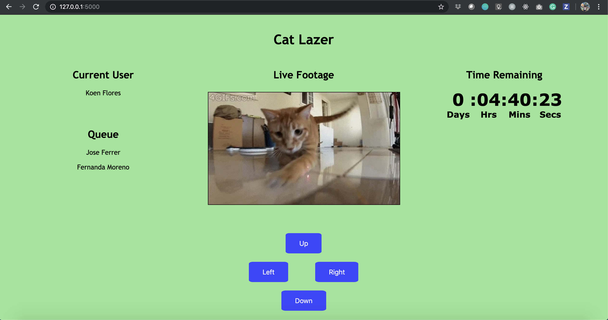
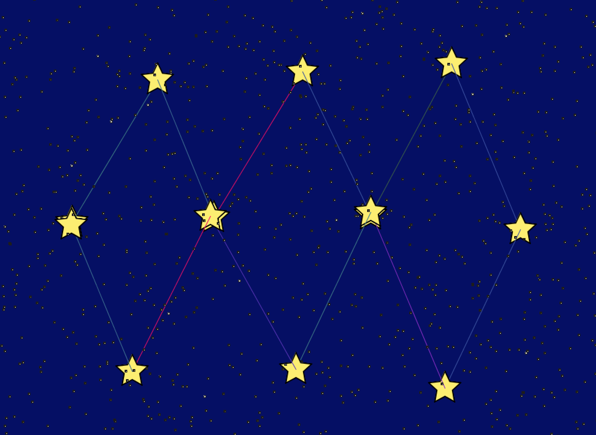

Central FL COVID-19 TwitterBot
Skills used: Python, Tweepy, Twitter Developer API
While in quarantine, I made a TwitterBot that scrapes data from worldometers and tweets statistics on coronavirus cases in Orange County and the state of FL. By tweeting updates everyday, this bot allows people to see how much the local COVID-19 case number grows day by day.
Tweets by CovidFlCat Laser Controller
Skills used: HTML, CSS, Python, Flask, Raspberry Pi
Collaborated with a team at University of Florida's hackathon (SwampHacks 2020) to create a web application that allows users to remotely control a laser pointer on a Raspberry Pi and play with a cat. I developed the front-end of the web app and connected it to the Raspberry Pi using HTML, CSS, Python, and Flask.
Inside Out Battle Game
Skills used: C, GameBoy Advance Game Development
A game inspired by Disney Pixar's Inside Out where Joy must defeat the Depression clouds by shooting rays of sunshine at it all while avoiding getting hit by lightning bolts. Joy loses a life every time she gets hit by lightning or touches a mini Depression cloud, but she can regain a life by collecting memory balls. I used Usenti to design all the sprites and draw the moving background in the pause state. In the development of this game, I met weekly deadlines and carried the project from ideation to completion in the span of a month.
Laser Beam Builder Game
Skills used: Java, Processing 3
A game consisting of multiple players in which one player arranges obstacles with mirrors and blocks for the second player to figure out how to reach the target with one or more lasers. Working with a group and taking on the role of UX Engineer for this project, I contributed to designing and implementing the game menu, background music, and some of the game functionality. Check out the game demo in the video below!
Drawing Tool: Redraw The Stars
Skills used: Java, Processing 3
A drawing tool that allows users to place stars in the night sky and create their own constellations. This program utilizes an audio library so the connecting lines and background stars change color depending on the volume in the room.
Milk and Gech TwitterBot
Skills used: JavaScript (Node.js), Twitter Developer API
Milk and Gech is a TwitterBot I made that tweets hand-selected posts from the Overheard at GT Facebook Group in a form that resembles poetry. The idea for this bot came from the book Milk and Vines, which is a parody of Rupi Kaur's Milk and Honey. For an additional humorous effect, this bot tweets memes with nouns replaced with Georgia Tech-related words. Scroll through the bot's timeline below!
Tweets by milkandgechMondrian Art
Skills used: HTML, CSS
In learning how to create CSS art, I created my own personalized Mondrian painting purely with HTML and CSS following a tutorial from Coder Projects. The tutorial demonstrated how to get started and allowed me the opportunity to solve how to finish the pattern and customize each box with colors of my choice.
See the Pen Mondrian by Fernanda Moreno (@fernanda-moreno) on CodePen.
We-HighSchool Website for High School Students
Skills used: HTML, CSS
At the Girls Who Code Summer Immersion Program (Miami, FL, 2016), my team and I created a website aimed at helping students succeed throughout high school and find scholarships and internships. In addition to contributing to the website's design and purpose, my primary role was to write code and content for the Surviving High School page of the site. Feel free to check out the website by clicking on the image below!